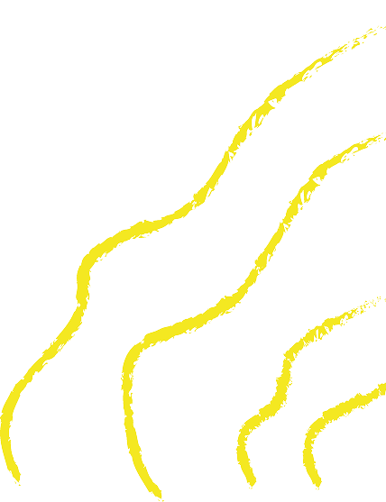
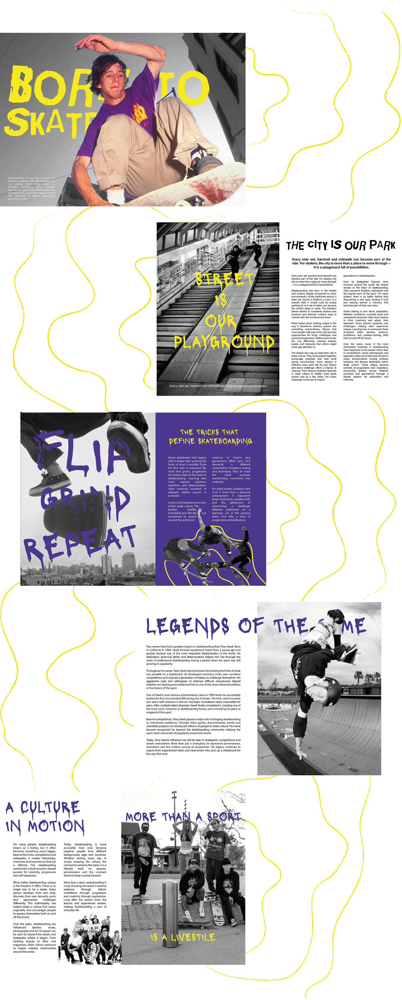
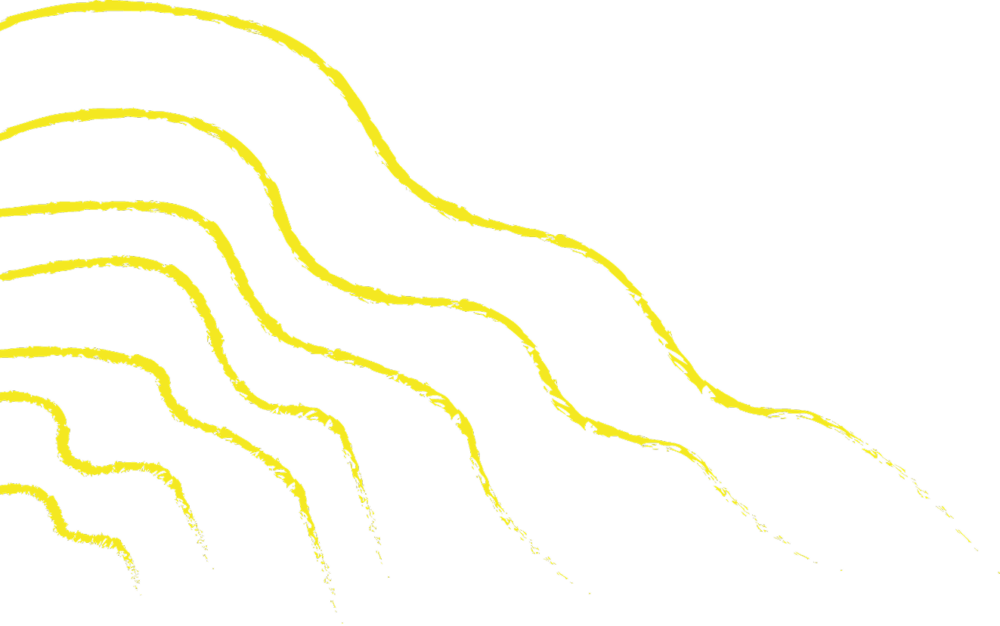
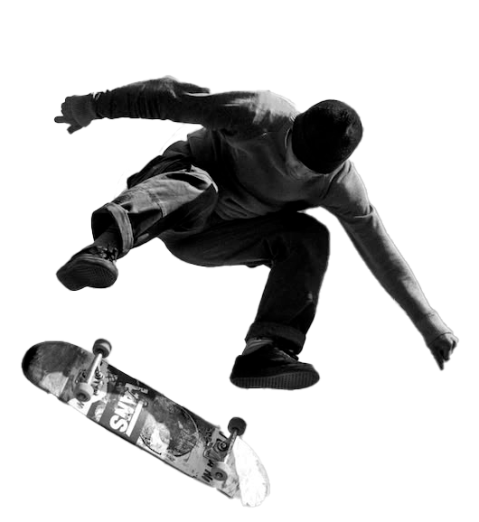

Project
Skate Magazine
Year
2026
Design
Editorial Design
About
This editorial project explores the world of skateboarding through a bold and energetic visual identity, inspired by street culture, movement and self-expression. The magazine combines strong typography, high-contrast photography and vibrant colour details to create a visual rhythm that reflects the speed, attitude and raw character of skateboarding.
Through an editorial approach focused on composition, texture and visual hierarchy, the project creates an immersive graphic experience.






Inspired by
Skate
Lifestyle